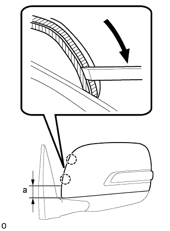
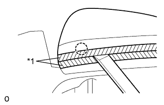
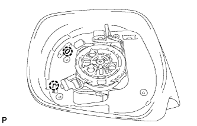
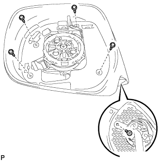

ТЕЛЕКАМЕРА (боковая) > СНЯТИЕ |
| 1. СНИМИТЕ ЛЕВОЕ НАРУЖНОЕ ЗЕРКАЛО ЗАДНЕГО ВИДА В СБОРЕ |
Снимите наружное зеркало заднего вида (Нажмите здесь).
| 2. СНИМИТЕ СТЕКЛО НАРУЖНОГО ЗЕРКАЛА ЗАДНЕГО ВИДА |
 |
Надавите на верхнюю часть зеркала и наклоните его.
С помощью съемника молдингов расцепите 4 захвата и отсоедините стекло наружного зеркала заднего вида от корпуса зеркала.
| *1 | Защитная клейкая лента |
 |
Для моделей с обогревателем зеркала:
Отсоедините 2 разъема и снимите стекло зеркала.
| 3. СНИМИТЕ КРЫШКУ НАРУЖНОГО ЗЕРКАЛА |
 |
 |
С помощью 2 отверток освободите 2 захвата.
| *1 | Защитная клейкая лента |
Вставьте отвертку в прорезь, как показано на рисунке, и нажмите на корпус наружного зеркала, чтобы создать пространство между корпусом и крышкой наружного зеркала.
| *1 | Защитная клейкая лента | *2 | Ребро |
| *a | Внутренняя сторона крышки наружного зеркала | - | - |
 |
Вставьте съемник молдингов в созданное пространство между корпусом и крышкой наружного зеркала.
| *1 | Защитная клейкая лента |
|  |
Сдвиньте съемник молдингов вниз, как показано на рисунке, чтобы освободить 2 захвата.
| Область | Заданные условия |
| a | 40,0 мм (1,57 дюйма) |
Снимите съемник молдингов.
|  |
Вставьте съемник молдингов между корпусом и крышкой наружного зеркала, как показано на рисунке, и освободите захват.
| *1 | Защитная клейкая лента |
 |
С помощью отвертки отцепите захват.
| *1 | Защитная клейкая лента |
|  |
Освободите 2 захвата и снимите крышку наружного зеркала.
| 4. СНИМИТЕ ЛЕВЫЙ ПОВТОРИТЕЛЬ УКАЗАТЕЛЯ ПОВОРОТА В СБОРЕ |
 |
Выверните 3 винта и снимите лампу.
Отсоедините разъем.
| 5. СНИМИТЕ БОКОВУЮ ТЕЛЕКАМЕРУ В СБОРЕ |
Удалите ленту.
| *1 | Лента |
 |
Выверните винт, освободите 4 захвата и снимите резиновое основание.
Снимите нижнюю крышку зеркала.
Наклейте защитную клейкую ленту вокруг нижней крышки зеркала.
| *1 | Защитная клейкая лента |
С помощью отвертки отцепите захват.
| *1 | Защитная клейкая лента |
 |
С помощью отвертки отцепите захват.
| *1 | Защитная клейкая лента |
 |
С помощью отвертки освободите захват, чтобы создать пространство между нижней крышкой и корпусом зеркала, как показано на рисунке.
| *1 | Защитная клейкая лента |
Вставьте отвертку, как показано на рисунке.
| *1 | Защитная клейкая лента |
Освободите захват, чтобы создать пространство между нижней крышкой и корпусом зеркала, как показано на рисунке.
| *1 | Защитная клейкая лента |
Перемещая нижнюю крышку зеркала вперед и назад в направлениях, показанных на рисунке стрелками, освободите 3 захвата и снимите нижнюю крышку зеркала.
 |
Выверните 3 винта с помощью торцевого ключа с головкой "TORX" T25.
|  |
Выверните 5 винтов.
С помощью съемника молдингов откройте корпус зеркала, как показано на рисунке.
С помощью съемника молдингов расцепите 2 захватов.
С помощью отвертки отсоедините разъем.
| *1 | Защитная клейкая лента |
Выверните 3 винта и снимите боковую телекамеру.